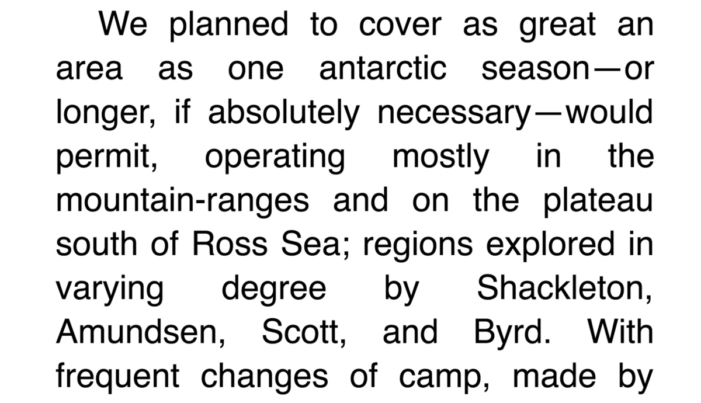

NO
Justified text creates “rivers” or “holes” within text, making it visually unattractive, distracting, and difficult to locate the end of sentences.
source

Extract from
At the Mountains of Madness
by H. P. Lovecraft